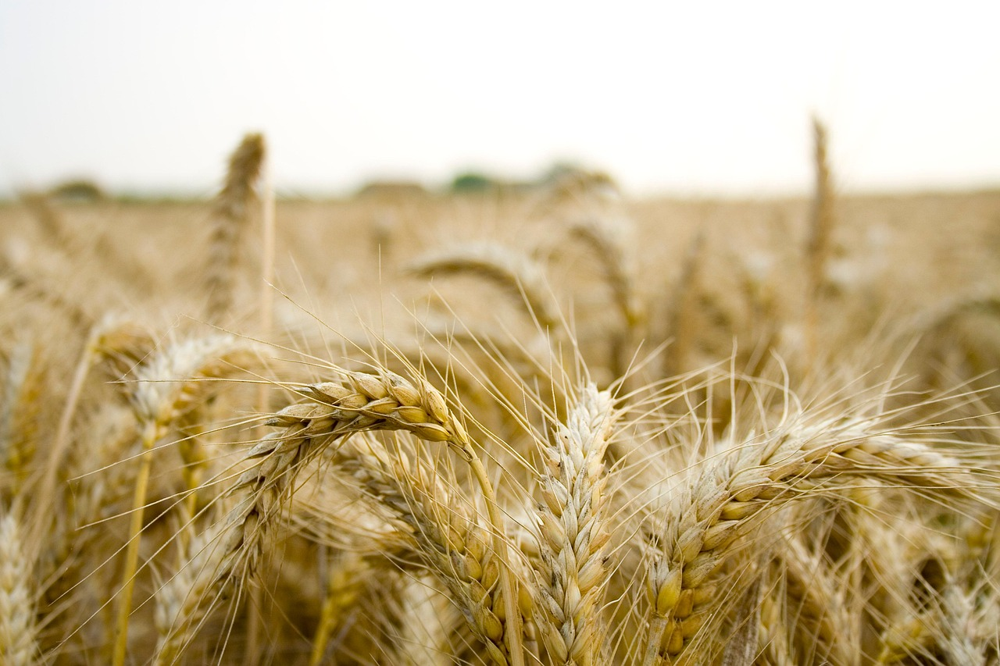
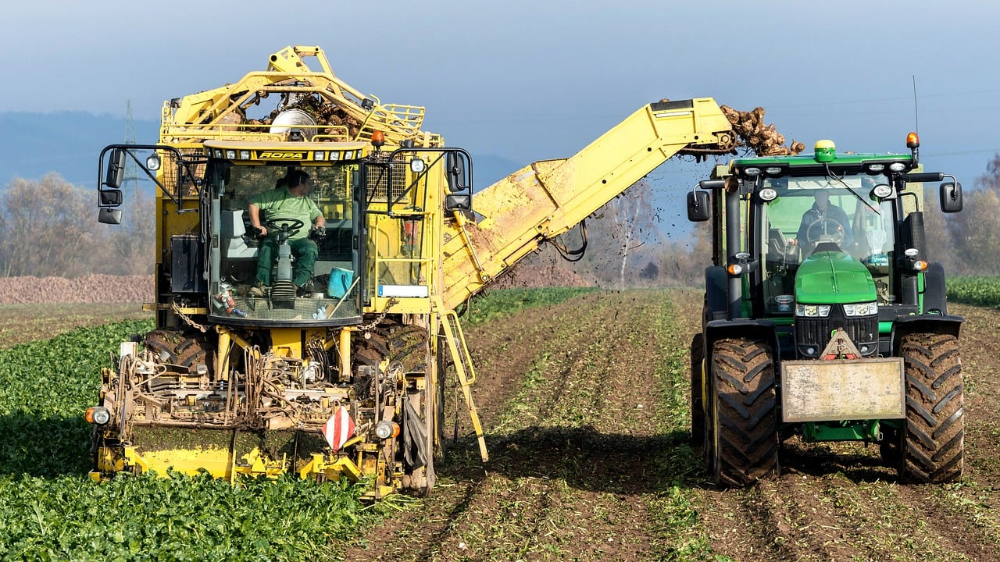
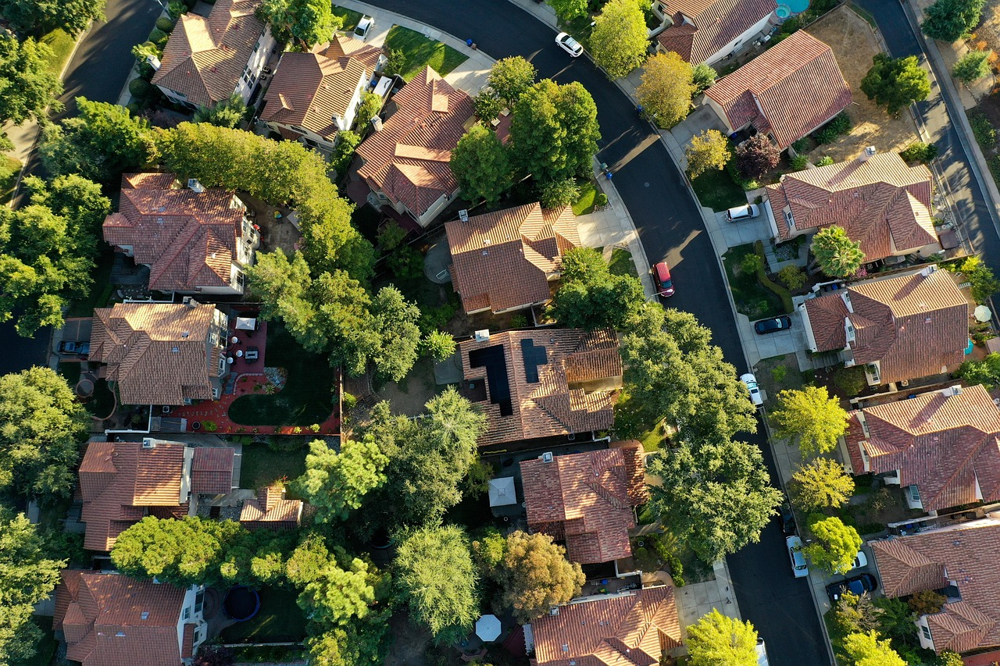

A agricultura, uma atividade econômica fundamental que se refere ao cultivo de plantas, desempenha um papel crucial na sociedade, fornecendo alimentos, matérias-primas e contribuindo para o desenvolvimento econômico. Ela tem suas raízes em tempos remotos, com o desenvolvimento da agricultura marcando a transição da vida nômade para o sedentarismo e a formação das primeiras civilizações.
Agricultura

A agricultura é uma das principais atividades do campo, responsável pela produção de alimentos e matérias-primas.
Pecuária

A pecuária envolve a criação de animais para a produção de carne, leite e outros produtos.
Sustentabilidade

Práticas sustentáveis são essenciais para preservar o meio ambiente e garantir a produção a longo prazo.